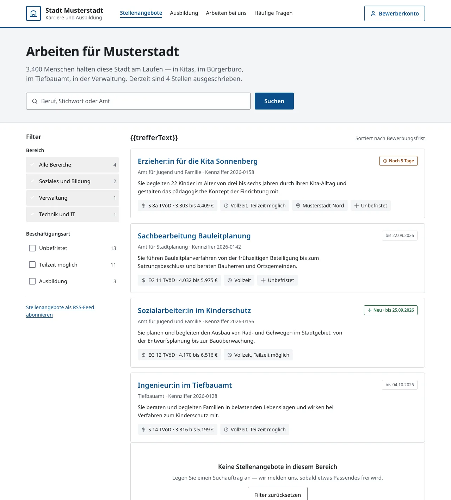
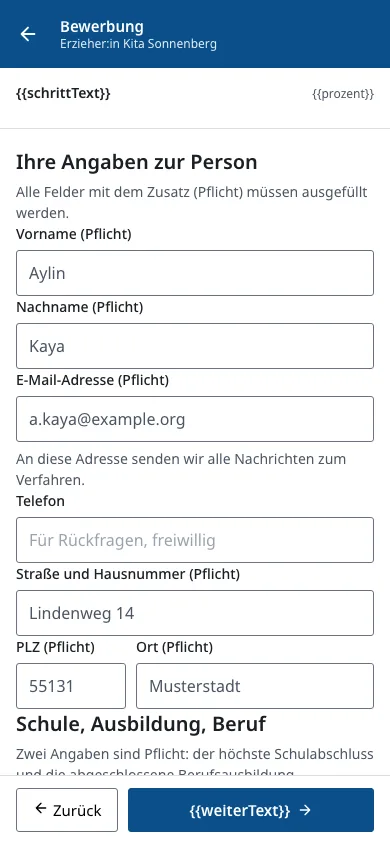
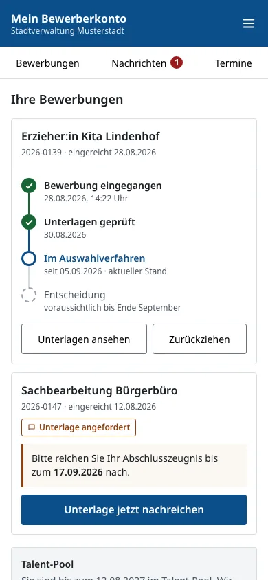
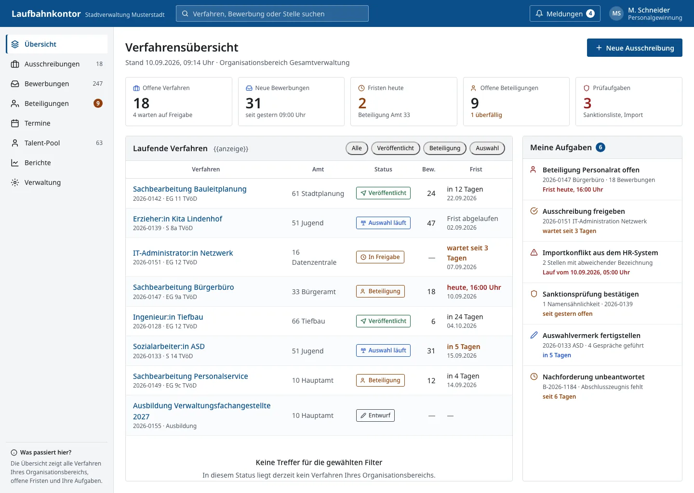
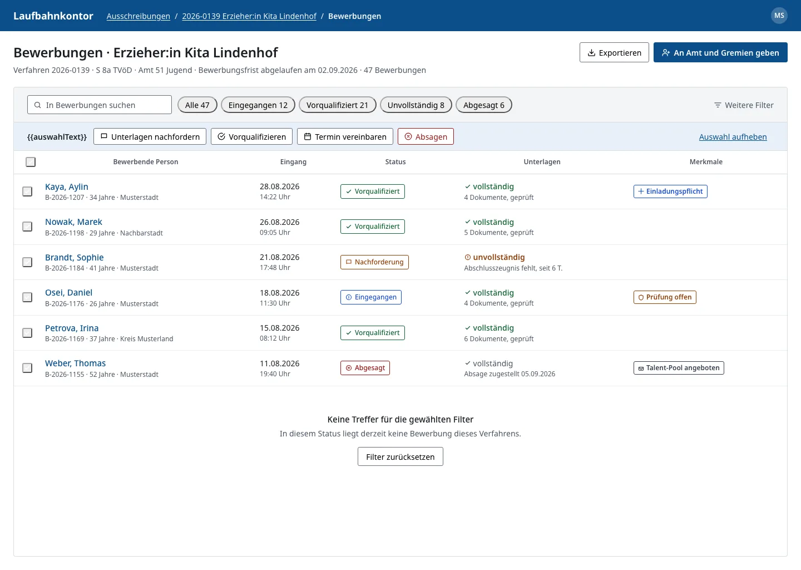
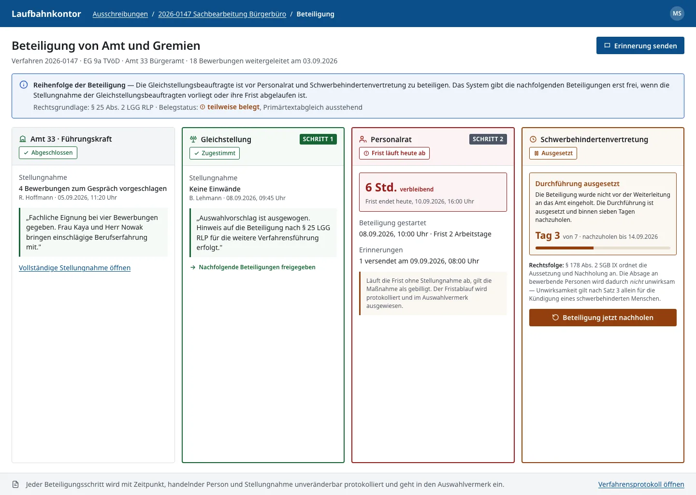

Beraterium GbR
Dr. Maria Grollmuß-Straße 14 · 02625 Bautzen
An
Kommunale Datenzentrale Mainz
Hechtsheimer Straße 31A
55131 Mainz
Vergabestelle: Stadtverwaltung Mainz, Amt für Finanzen, Beteiligungen und Sport, Abteilung Vergabe und Einkauf (Amt 20)
Vergabenummer: 01.076/2026-20 // KDZ
Von
Beraterium GbR
Dr. Maria Grollmuß-Straße 14
02625 Bautzen
Till Manfred Blania · Aleksandra Polosukhina
Stand: September 2026
PRÄSENTATION
Laufbahnkontor — Bewerbermanagement für den öffentlichen Dienst
Präsentationsunterlage zum Bietergespräch für die Beschaffung einer Software für das Bewerbermanagement — Vergabenummer 01.076/2026-20 // KDZ. Beraterium GbR · Oberflächenentwürfe = Klickprototyp, kein Produktivstand.
AGENDA
Inhalt der Präsentation
- 1. Verständnis der Aufgabe
- 2. Live-Demo-Leitfaden (LV 5.1)
- 3. Produkt im Bild
- 4. Konzeptvortrag (LV 5.2 / 7.2)
- 5. MUSS-Erfüllung
- 6. SOLL-Positionierung
- 7. Mitbestimmung & Recht
- 8. Nächste Schritte
AUFGABENVERSTÄNDNIS
Verständnis der Aufgabe
Die Landeshauptstadt Mainz ersetzt P&I LOGA Bewerber3 durch eine eigenständige Bewerbermanagement-Lösung. Laufbahnkontor bildet den Personalauswahlprozess von der Vakanz bis zur dokumentierten Einstellung oder Absage ab — für Tarifbeschäftigte und Beamtinnen und Beamte gleichermaßen.
- Leistungsempfänger: Landeshauptstadt Mainz, ca. 4.400 Mitarbeitende, 27 Ämter/Eigenbetriebe
- Volumen: ca. 850 Verfahren und ca. 9.800 Bewerbungen pro Jahr (Projektkontext)
- Vertragslaufzeit: 48 Monate Software inkl. Pflege
- Lizenzen: 200 Named-User-Lizenzen (alternativ Stadtlizenz)
ECKDATEN
Projektkontext (Fortsetzung)
- Betriebsmodell: SaaS-Webanwendung im EU/EWR-Rechenzentrum des Anbieters, Browser-only
- HR-Anbindung: Täglicher Import aus P&I LOGA — keine Rückschnittstelle (LV 4.2.3)
- Altsystem: Ablösung Bewerber3; Migrationskonzept projektspezifisch nach Zuschlag
LV 5.1
Live-Demo — neun Arbeitssituationen
100 Gewichtungspunkte · zugeordnete Prototyp-Bildschirme
- 1. Erstellung einer Ausschreibung auf Basis einer Planstelle 10 Gp
- 2. Benutzerregistrierung & Login am Cockpit (Bewerbersicht) 10 Gp
- 3. Vorstellung der Funktionen des Cockpits 15 Gp
- 4. Erstellen und Absenden einer Bewerbung 5 Gp
- 5. Vorselektion & Nachfordern von Unterlagen 10 Gp
- 6. Zuweisung an Ämter und Gremien 10 Gp
- 7. Termineinladung und PZU 10 Gp
- 8. Abschluss des Verfahrens (Einstellung und Absage) 10 Gp
- 9. Berichte und Auswertungen 5 Gp
1. Erstellung einer Ausschreibung auf Basis einer Planstelle
Bildschirm: Verfahrensübersicht (B4) + Ausschreibungsworkflow
- Personalstelle aus dem LOGA-Import auswählen — Stellennummer, Bezeichnung, Besoldung vorbelegt.
- Ausschreibung mit 15 Pflichtfeldern anlegen; Freigabeworkflow durch Fachvorgesetzte und Personalgewinnung.
- Veröffentlichung in der zentralen Stellenbörse; Fristen und Statusautomatik aktiv.
2. Benutzerregistrierung & Login am Cockpit (Bewerbersicht)
Bildschirm: Bewerberkonto (B8)
- Registrierung mit E-Mail-Verifikation und optional MFA für Bewerbende.
- Anmeldung am Bewerberkonto — Mehrfachbewerbungen unter einem Konto.
- Kein Social Login; Datenschutzhinweise und Einwilligungen dokumentiert.
3. Vorstellung der Funktionen des Cockpits
Bildschirm: Bewerberkonto — Timeline, Reiter Nachrichten/Termine (B8)
- Verlauf jeder Bewerbung als Zeitstrahl — nachvollziehbar ohne Hotline.
- Nachrichtenkanal zur Personalberatung (Mensch zu Mensch, kein Chat-Bot).
- Terminübersicht für Einladungen und PZU-Termine; Art.-15-Export und Kontolöschung.
4. Erstellen und Absenden einer Bewerbung
Bildschirm: Bewerbungsformular (B7) + Stellenbörse (B6)
- Stelle aus der Stellenbörse wählen — Filter nach Amt, Einstiegslevel, Entgelt.
- Mehrstufiges Formular mit Zwischenspeicherung; kein Feld „bisheriges Gehalt“ (AGG).
- Anlagen-Upload mit Malware-Scan; Eingangsbestätigung und Statuswechsel im System.
5. Vorselektion & Nachfordern von Unterlagen
Bildschirm: Bewerbungsliste (B9)
- Filter und Mehrfachauswahl in der Bewerbungsliste — Entscheidung durch Sachbearbeitung.
- Vorselektion dokumentiert; keine automatische Rangliste oder Scoring.
- Nachfordern, Terminvereinbarung oder begründete Absage aus einer Oberfläche.
6. Zuweisung an Ämter und Gremien
Bildschirm: Beteiligungsboard (B11)
- Weiterleitung an Fachamt nach Vorauswahl durch Personalgewinnung.
- Gremien (Personalrat, SBV, Gleichstellung) sehen erst ab Vorqualifizierung.
- Reihenfolge Gleichstellung vor Personalrat und SBV; Einstellung gesperrt bis Abschluss.
7. Termineinladung und PZU
Bildschirm: Verfahrensübersicht + Terminmodul (B4/B10)
- Terminvorschläge an Bewerbende; optional Kalender-Integration M365 (LV 4.2.1, SOLL).
- PZU-Protokollierung im Aktivitäten-Management — Scan-Upload und Nachweis.
- Einladungsschreiben aus Vorlagen; Reply-To auf städtische Adressen (LV 4.1.6).
8. Abschluss des Verfahrens (Einstellung und Absage)
Bildschirm: Auswahlvermerk / Absagemodul (konzeptionell, B12)
- Auswahlvermerk revisionssicher — Bestenauslese durch Menschen (Art. 33 GG).
- Begründete Absage an nicht berücksichtigte Bewerbende aus Vorlagen.
- Verfahren abschließen; Aufbewahrungs- und Löschregeln anwenden.
9. Berichte und Auswertungen
Bildschirm: Reporting-Modul (B13, konzeptionell)
- Zehn Standardreports: Durchlaufzeiten, Besetzungsverlauf, Verfahrensstatus.
- Export für Controlling — keine Leistungsüberwachung einzelner Sachbearbeitender.
- Gremien-taugliche zusammengefasste Berichte zweckgebunden.
Produkt im Bild
Sechs Oberflächenentwürfe — Klickprototyp, kein Produktivstand.
BEWERBERPORTAL
Öffentliche Stellenbörse — login-frei und barrierefrei

- Bewerbende finden offene Stellen ohne Anmeldung, filtern nach Bereich, Einstiegslevel und Entgeltgruppe und gelangen direkt zum Online-Bewerbungsformular.
- Zentrale Stellenbörse mit Filter je Amt und Bereich — ohne Login nutzbar.
- Barrierefreiheit nach BITV 2.0 / WCAG 2.1 als Zielmaßstab.
Oberflächenentwurf, kein Produktivstand.
BEWERBUNG
Online-Bewerbung — auch mobil

- Mehrstufiges Formular mit Zwischenspeicherung, Anlagen-Upload und Malware-Prüfung.
- Malware-Scan aller Anlagen vor Speicherung.
- Volle Funktionsparität auf aktuellem iOS und Android.
- Kein Feld für bisherige Entgeltentwicklung — AGG-konform.
Oberflächenentwurf, kein Produktivstand.
BEWERBERKONTO
Bewerberkonto — Status, Nachrichten, Termine

- Nach Registrierung sehen Bewerbende den Verlauf jeder Bewerbung, Nachrichten der Personalberatung und geplante Termine — ohne Anruf bei der Hotline.
- Mehrfachbewerbungen mit Statusübersicht pro Verfahren.
- Nutzerinitiierte Kontolöschung und Art.-15-Auskunftsexport.
- Nachrichtenkanal zur Personalberatung — Mensch zu Mensch, kein Chat-Bot.
Oberflächenentwurf, kein Produktivstand.
SACHBEARBEITUNG
Verfahrensübersicht für die Personalgewinnung

- Named-User-Oberfläche mit Suche, Meldungen und KPI-Übersicht: laufende Ausschreibungen, Fristen und offene Aufgaben auf einen Blick.
- KPI-Übersicht Bewerbungseingang und offene Aufgaben.
- Personalisierte Named-User-Anmeldung mit Rollentrennung.
- Freigabeworkflow für Ausschreibungen mit 15 Pflichtfeldern.
Oberflächenentwurf, kein Produktivstand.
VORSELEKTION
Bewerbungsliste und Vorauswahl

- Sachbearbeitende filtern eingehende Bewerbungen, führen Vorselektion durch und leiten qualifizierte Bewerbungen an Fachämter weiter — mit dokumentiertem Verfahrensstand.
- Filter und Vorselektion — Entscheidung immer durch Sachbearbeitung.
- Weiterleitung an Fachamt und Gremien mit dokumentiertem Stand.
- Nachfordern, Terminvereinbarung oder begründete Absage aus einer Oberfläche.
Oberflächenentwurf, kein Produktivstand.
BETEILIGUNG
Beteiligung von Amt und Gremien

- Personalrat, Schwerbehindertenvertretung und Gleichstellungsbeauftragte sehen Unterlagen erst ab der Vorqualifizierung, geben Stellungnahmen ab und halten gesetzliche Fristen ein — ohne Papierumlauf.
- Sichtbarkeit ab Prozessschritt Vorqualifizierung — nichts davor.
- Reihenfolge Gleichstellung vor Personalrat und SBV im Workflow.
Oberflächenentwurf, kein Produktivstand.
Konzeptvortrag
LV 5.2 / 7.2 — 100 Gewichtungspunkte
1. Lizenzmodell & Berechtigungsmanagement
Named-User-Lizenzmodell ohne Concurrent-User-Zählung. 17 Rollen nach Anlage 8.1 mit zustandsabhängiger Sichtbarkeit.
- Named User: jede berechtigte Person erhält ein persönliches Konto.
- Drei-Achsen-Modell: Rolle × Organisationseinheit × Prozessschritt.
- Funktionstrennung: Freigabe, Vorauswahl und Einstellung getrennt zuweisbar.
- Vertretungsregelung und Sperrlogik bei parallelen Verfahren.
2. Bedienkonzept
Benutzerfreundliche, barrierefreie Handhabung für Bewerbende und Sachbearbeitung.
- Benutzerfreundlichkeit: klare Navigation, konsistente Begriffe, kontextuelle Hilfe.
- Workflows: 26 Prozessschritte von Vakanz bis Archivierung — statusgesteuert.
- Mobile Nutzung: Bewerberportal mobile-first; interne Oberfläche responsive ab 320 px.
- Barrierefreiheit: BITV 2.0 / WCAG 2.1 als Zielmaßstab; Tastatur, Fokus, Kontrast.
3. Systemkonzept
SaaS-Architektur als Docker-Bündel — selbst gehostet im EU/EWR-RZ. Gleicher Softwarestand für SaaS und on-premise.
- Architektur: modulare Domänenschicht, API-Gateway, Reverse Proxy (TLS 1.3).
- Technologie: .NET 10, PostgreSQL, Keycloak (SAML/SSO), SeaweedFS, Razor Pages Portal.
- Datenmodell: Mandant mit OE-Hierarchie getrennt von Vorgesetztenkette (LOGA-Import).
- LOGA-Import (LV 4.2.3): unidirektional, täglich, konfigurierbarer Mapping-Layer.
4. Servicekonzept
Umsetzung der MUSS- und SOLL-Anforderungen mit definierten Reaktions- und Erledigungszeiten.
- Releasemanagement: quartalsweise Minor-Releases, Hotfixes bei Sicherheitslücken.
- Störungsmanagement: Ticket-System, Prioritätsklassen nach EVB-IT-Systemvertrag.
- Reaktionszeiten: nach vertraglichen SLA-Stufen.
- Problemmanagement: Root-Cause-Analyse, Known-Error-Datenbank.
5. IT-Sicherheitskonzept
ISMS-Zielbild mit Geltungsbereich Bewerbermanagement-Betrieb. Partner-RZ EU/EWR — keine Behauptung eigener ISO/C5-Zertifizierung zum Angebotszeitpunkt.
- Löschen & Protokollierung: konfigurierbares Löschregelwerk, Audit-Trail.
- Risikomanagement: jährliche Risikoanalyse, Treatment-Plan.
- Incident & Change: dokumentierte Prozesse, Eskalationsmatrix.
- Schwachstellenmanagement: SBOM, Dependency-Track, OWASP ZAP in CI.
6. Künstliche Intelligenz
KI ausschließlich assistierend — niemals entscheidend. Systemweit abschaltbar.
- CV-Vorbefüllung: optional, bewerbende Person prüft jeden Wert.
- Kein Scoring, kein Ranking, kein automatisches Filtern.
- Kein Hochrisiko-KI-System für Entscheidungen.
- Funktionsschalter in Administration — Mandant kann KI vollständig deaktivieren.
7. Internes Recruiting
Obwohl internes Recruiting derzeit nicht geplant ist, unterstützt Laufbahnkontor interne Besetzungsoptionen.
- Verfahrenstyp „intern/extern“ bei Stellenanforderung wählbar.
- Sichtbarkeit interner Stellen nur für berechtigte Mitarbeitende.
- Dokumentation Meldung freier Stelle an Agentur für Arbeit (§ 165 SGB IX).
- Gleicher Prozess ab Vorauswahl — Gremienbeteiligung unverändert.
MUSS-KRITERIEN
Erfüllung der Ausschlusskriterien (59 MUSS) (1/2)
Jedes nicht erfüllte MUSS-Kriterium führt zum Ausschluss. Auszug nach LV-Kapiteln.
| LV-ID | Anforderung (Kurz) | Laufbahnkontor | Modul / Phase |
|---|---|---|---|
| 2.1 ff. | Funktionale Kernprozesse | Konzeptionell abgedeckt | Bauphase 1–2 |
| 2.7 | Veröffentlichung, Verschlüsselung Zugangsdaten | Ja — Stellenbörse + TLS | Bauphase 1 |
| 2.9.7 | CV-Parsing deaktivierbar | Ja — Funktionsschalter, Auslieferung aus | Bauphase 3 optional |
| 3.2.1 | SAML / SSO | Ja — Keycloak | Bauphase 1 |
| 3.4 | MFA für Bewerber | Ja — optional pro Mandant | Bauphase 1 |
| 3.7 | Barrierefreiheit BITV/WCAG | Zielmaßstab — Nachweis im Produktivbetrieb | Bauphase 1–2 |
| 3.13 | Löschfristen konfigurierbar | Ja — Löschregelwerk B17 | Bauphase 1 |
| 4.1.1 | ISMS / sicherer Cloud-Betrieb | ISMS-Zielbild + Partner-RZ-Nachweis | Angebot + Betrieb |
MUSS-KRITERIEN
Erfüllung der Ausschlusskriterien (59 MUSS) (2/2)
Fortsetzung
| LV-ID | Anforderung (Kurz) | Laufbahnkontor | Modul / Phase |
|---|---|---|---|
| 4.1.2 | Webanwendung Edge/Firefox, Proxy, HTTPS | Ja — Reverse Proxy | Bauphase 1 |
| 4.1.3 | Rechenzentrum EU/EWR | Partner-RZ ISO 27001, DSGVO | Angebot C2 |
| 4.1.4 | TLS-Zertifikats-Handling | Ja — ACME-Automatisierung | Betrieb |
| 4.1.5 | Kryptografie BSI TR-02102 | Ja — Krypto-Inventar | Bauphase 1 |
| 4.1.6 | E-Mail mainz-Domain, Reply-To, SPF/DKIM | Ja — Versandmodul | Bauphase 1 |
| 4.1.8 | Backup BSI-Grundschutz | Ja — im Servicekonzept | Betrieb |
| 4.2.2 | Manueller CSV/TXT-Import | Ja — Upload + Validierung | Bauphase 1 |
| Anlage 8.1 | 17 Rollen, zustandsabhängige Sichtbarkeit | Ja — RBAC-Modell | Bauphase 1 |
SOLL-POSITIONEN
Positionierung der wertungsrelevanten SOLL-Anforderungen (1/2)
Maximal 12.710 SOLL-Punkte laut LV 7.1. Ehrliche Priorisierung.
| LV-ID | Position | Punkte | Angeboten | Anmerkung |
|---|---|---|---|---|
| 4.2.3 | Automatischer LOGA-Import | 2.000 | Ja | Mapping-Layer + Test mit KDZ |
| 4.1.7 | TLS 1.3, DNSSEC, Security-Header | 1.000 | Ja | IT-Sicherheitskonzept |
| 4.2.1 | M365-Kalender-Integration | 1.000 | Ja | Microsoft Graph |
| 2.2.1 | Initiale Anlage Personalstellen | 1.000 | Ja | Import + manuell |
| 2.16 | Sanktionsliste | 1.000 | Gestaffelt | Prüfmodul vorgesehen |
| 3.2.1 | SAML / SSO | 750 | Ja | Keycloak |
| 3.4 | MFA Bewerber | 750 | Ja | Optional aktivierbar |
| 2.9.7 | CV-Parsing (Vorbefüllung) | 750 | Ja, deaktiviert | Kein Scoring |
SOLL-POSITIONEN
Positionierung der wertungsrelevanten SOLL-Anforderungen (2/2)
Fortsetzung
| LV-ID | Position | Punkte | Angeboten | Anmerkung |
|---|---|---|---|---|
| 2.9.9.3 | Interviewteilnehmer | 500 | Ja | Terminmodul |
| 2.13.1 | Reportings | 500 | Ja | 10 Standardreports |
| 2.12.2 | Messengerdienste | ~1.000 | Nein | Nicht in V1 |
| 4.1.1 | ISO-Zertifikatsnachweis | 800 | Teilweise | Partner-RZ; kein C5-Versprechen |
| 2.18 | Routenplanfunktion | 100 | Nein | Bewusster Verzicht |
MITBESTIMMUNG & RECHT
Personalvertretung, Gleichstellung, Datenschutz
Laufbahnkontor unterstützt Mitbestimmung und Bestenauslese ohne Leistungsüberwachung Einzelner.
- Art. 33 GG: Bestenauslese durch Menschen — revisionssicher dokumentiert.
- AGG: kein Feld „bisheriges Gehalt“; kein automatisches Scoring.
- DSGVO: Art.-15-Export, Löschregeln, AVV nach EVB-IT; Rechenzentrum EU/EWR.
- Gremien: Sichtbarkeit ab Vorqualifizierung; Reihenfolge Gleichstellung → Personalrat → SBV.
- Dienstvereinbarung: Muster-Systembeschreibung als Rollout-Anlage.
- Protokollierung: Audit-Trail; pseudonymisierte Gremiensichten.
ABSCHLUSS
Nächste Schritte
Wir freuen uns auf das Bietergespräch in der KDZ Mainz und demonstrieren den Klickprototyp entlang der neun LV-Aufgaben.
- Bietergespräch: Live-Demo nach LV 5.1 (ca. 2 Stunden).
- Konzeptvertiefung: Bedien-, System-, Service- und IT-Sicherheitskonzept auf Anfrage.
- Angebot: schriftliche Konzepte gemäß LV 7.2 als Anlage zum Angebot.
Beraterium GbR · Laufbahnkontor · Vergabe 01.076/2026-20 // KDZ